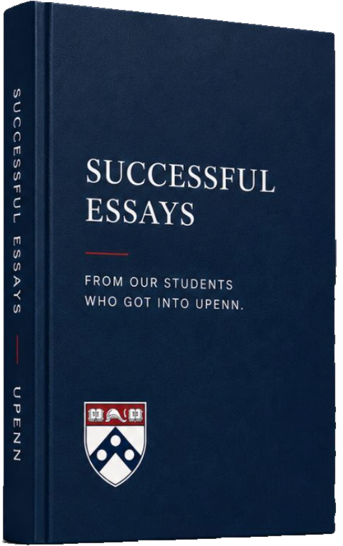
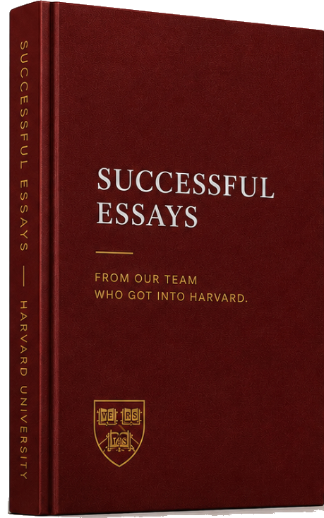

{{ post.videoNode }}
{{ post.excerpt }}
{{ para.text }}
{{ para.text }}
{{ para.text }}
— REAL RESULTS, REAL FAMILIES —
These are not highlight reels. They are real students who spent years building something genuine, and whose applications reflected exactly who they are.
Elite consulting from 9th grade through decision day. Our team is 100% Ivy+ educated, with the expertise to guide your student to acceptance.
{{ r.quote }}
The Breakdown
We split the work into two programs: College Guidance, for grades 7 through 11, and College Applications, for grades 11 to 12.
Pick one to see how we work on it.
{{ t.detail }}
{{ t.quote }}
{{ svcActive.body }}
“{{ svcActive.quote }}”
{{ svcActive.quoteName }} {{ svcActive.quoteSchool }}
Three sessions with Razi, one of them joined by a former admissions officer, to look at where a student actually stands and what the next two years should look like. No commitment past the third session.
Schedule a Call to Learn MoreWe pair you with the mentor best equipped to help you, chosen for your field, your goals, and the way you work. They know which parts of the process matter and which parts only feel like they do.
{{ mentorNote }}

Charvi's personal statement is printed in full, alongside the other essays that got our students into Penn.
Pick one of our students student to read how their essay opens, and what we marked as important.
Razi's book collects the essays that got our students into every elite college, printed in full with the thinking behind each one. If you want to know what we mean when we say the essay has to sound like a person, start there.
Get it on AmazonGot Questions?
The essays that got our students into every elite college, printed in full with the thinking behind each one. Razi wrote it after four years of watching the same three mistakes sink otherwise strong applications.
If you read one thing on this page, read this. It is the closest you can get to sitting in on a session.
Read the real essays that got our students in, organized by where they were admitted.

Harvard From our team who got into Harvard Including the essay published in 50 Successful Harvard Application Essays. Read the collection UCLA & UC Berkeley From our students who got into the UCs The PIQ set is its own genre. These 350 word answers show how it is done. Read the collection UPenn From our students who got into UPenn Penn reads for fit harder than most. These essays answer the question it is actually asking. Read the collectionThe Harvard Crimson selects fifty essays for each edition. Razi's is in the fifth, alongside the analysis of what made it work.
It is the same standard we hold every student's essay to, and on a consultation call we are happy to walk you through it line by line.
See it on AmazonBoth essays that got him into Harvard, printed whole, with notes in the margin on what each move is doing.
Nothing filed under that filter yet.
Elite consulting from 9th grade through decision day. Our team is 100% Ivy+ educated, with the expertise to guide your student to acceptance.
{{ m.about }}
{{ post.excerpt }}
{{ para.text }}
{{ para.text }}